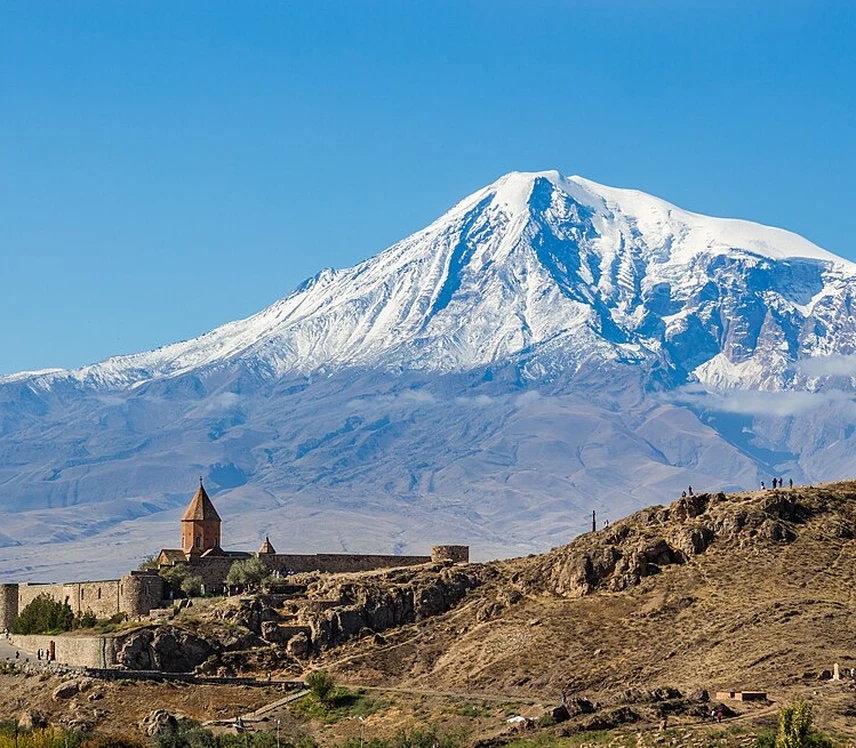
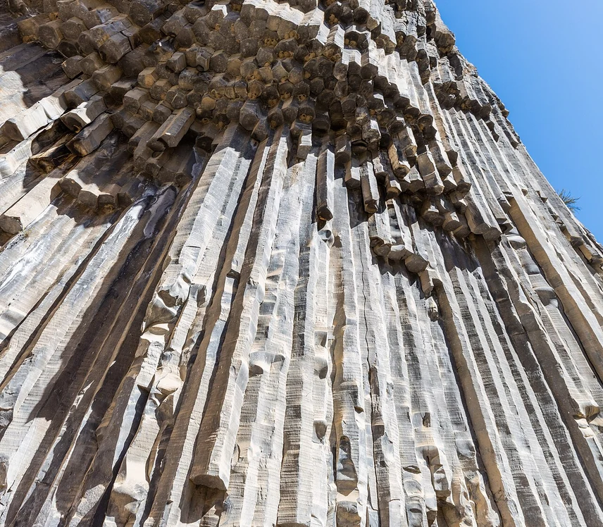
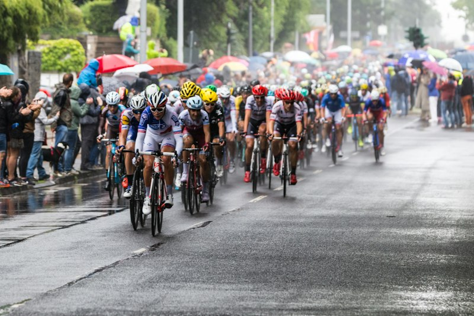

Экскурсии в группах до 19 человек
Самый популярный и доступный формат экскурсий по Армении. Просторные автобусы Mercedes Sprinter с кондиционером, панорамными окнами и профессиональными гидами.
Доступные маршруты
Найдено 4 предложений
8–9 ч.[Стандарт] Хор Вирап, Нораванк и винный завод Арени
Классический маршрут к Арарату, Нораванку и винодельне Арени по лучшей цене.
- Ереван → Хор Вирап → Арени → Нораванк
- Профессиональный гид, комфорт-авто, вода
![[Стандарт] Озеро Севан и курортный Дилижан](assets/hero/tour-2-sevan.jpg?v=5) 7 ч.
7 ч.
[Стандарт] Озеро Севан и курортный Дилижан
Знакомство с высокогорным озером Севан, монастырем Севанаванк и зеленым Дилижаном.
- Ереван → Севан → Дилижан
- Профессиональный гид, комфорт-авто, вода

5 ч.[Стандарт] Храм Гарни и монастырь Гегард
Экскурсия к единственному языческому храму Гарни и скальному монастырю Гегард.
- Ереван → Гарни → Гегард
- Профессиональный гид, комфорт-авто, вода

13–14 ч.[Стандарт] Крылья Татева и водопад Шаки
Однодневная гранд-поездка на юг Армении к канатной дороге Татева и водопаду Шаки.
- Ереван → Шаки → Татев
- Профессиональный гид, комфорт-авто, вода